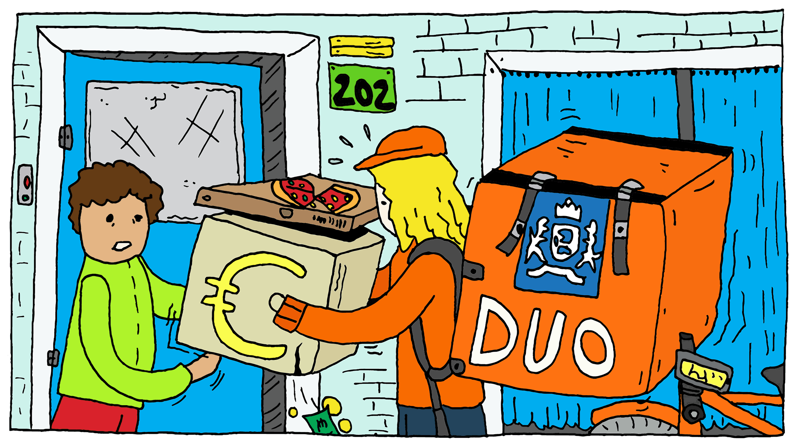
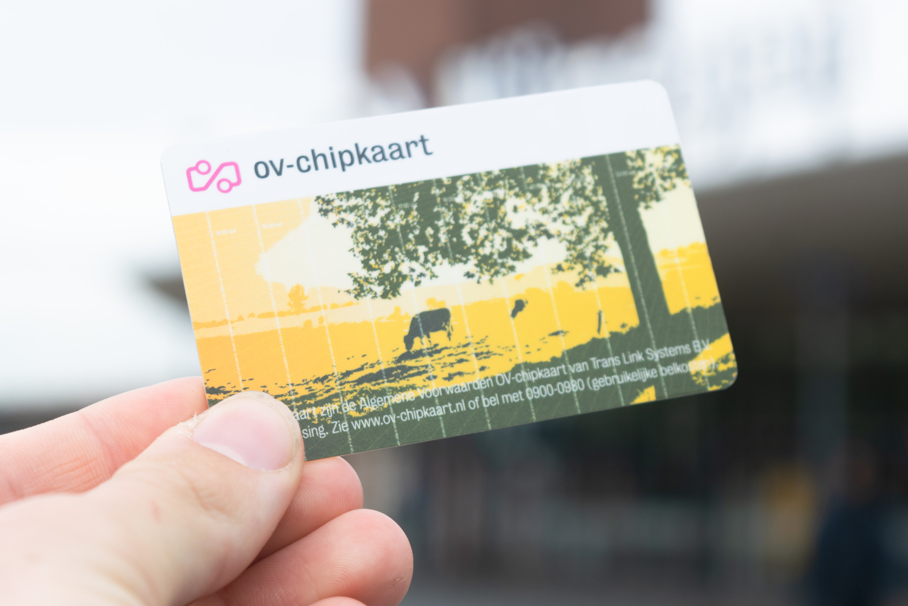

DUO (Dienst Uitvoering Onderwijs) is een overheidsorganisatie die verantwoordelijk is voor het uitvoeren van verschillende diensten die te maken hebben met studiefinanciering, diploma's, en terugbetalingen van leningen in Nederland. DUO helpt studenten met het aanvragen van studiefinanciering en verstrekt de Studenten OV-chipkaart.
Wat doet DUO precies?
DUO verstrekt studiefinanciering aan studenten in Nederland.
DUO zorgt voor het bijhouden van studiepunten en diploma's.
DUO helpt bij het terugbetalen van studieleningen na het afronden van je studie.
DUO verstrekt de Studenten OV-chipkaart aan studenten die recht hebben op studiefinanciering.
Wie kan studiefinanciering aanvragen bij DUO?
Alleen studenten die voldoen aan de voorwaarden kunnen studiefinanciering aanvragen bij DUO. Dit geldt voor mbo-, hbo- en wo-studenten die recht hebben op studiefinanciering. Je kunt studiefinanciering aanvragen zolang je aan de voorwaarden voldoet, zoals het volgen van een erkende opleiding en het hebben van de juiste nationaliteit.
Wat gebeurt er als je studieschuld niet aflost?
DUO is verantwoordelijk voor het beheer van je studieschuld. Als je moeite hebt met het terugbetalen van je lening, kun je bij DUO terecht voor een betalingsregeling. Het is belangrijk om je schuld op tijd terug te betalen, want anders kan DUO extra rente in rekening brengen.
Wat betekent het leenstelsel van DUO?
Het leenstelsel houdt in dat je geld leent voor je studie en dit later moet terugbetalen. Bij DUO kun je kiezen voor het lenen van geld voor je studie en moet je dit na je studie in termijnen terugbetalen. Als je je studie binnen een bepaalde tijd afrondt, kunnen er voorwaarden zijn die invloed hebben op hoeveel je moet terugbetalen.
Wat gebeurt er met je basisbeurs als je binnen 10 jaar je mbo-diploma haalt?
Als je een mbo-opleiding op niveau 3 of 4 doet en binnen 10 jaar je diploma behaalt, wordt je basisbeurs omgezet in een gift. Dit betekent dat je het niet hoeft terug te betalen. Haal je je diploma niet op tijd, dan moet je de ontvangen basisbeurs alsnog terugbetalen aan DUO.
Wat is Studiefinanciering?

Studiefinanciering is een financieel steuntje voor studenten om de kosten van hun opleiding en levensonderhoud te dekken. Het kan bestaan uit een basisbeurs, aanvullende beurs en lening, afhankelijk van je situatie.
Wat gebeurt er als je studiefinanciering ontvangt, maar langer over je mbo-opleiding doet dan gepland?
Voor mbo-niveau 3 en 4 krijg je maximaal 4 jaar studiefinanciering. Daarna stopt de basisbeurs, maar je kunt nog wel lenen als je doorstudeert.
Wat is de Basisbeurs?
De basisbeurs is een uitkering voor studenten die hen helpt met het bekostigen van hun studie en levensonderhoud. In Nederland kunnen studenten die recht hebben op studiefinanciering een basisbeurs aanvragen. De basisbeurs kan na afloop van je studie omgezet worden in een gift, maar dit geldt alleen als je je diploma op tijd behaalt.
Wat is de Aanvullende Beurs?
De aanvullende beurs is een extra uitkering voor studenten waarvan de ouders een laag inkomen hebben. Deze beurs is bedoeld om extra financiële ondersteuning te bieden. Net als de basisbeurs kan de aanvullende beurs omgezet worden in een gift, maar alleen als je binnen 10 jaar je diploma behaalt.
Studielening en Terugbetalen
Als je studielening bij DUO afsluit, kun je het geleende bedrag gebruiken voor je studiekosten en levensonderhoud. Het terugbetalen van de lening begint na je afstuderen en kan maximaal 35 jaar duren, afhankelijk van je situatie. Als je je lening niet op tijd terugbetaalt, kan er rente worden toegevoegd. Het rentepercentage varieert jaarlijks, en de hoogte wordt door DUO vastgesteld.
Studiefinanciering voor Mbo-studenten
Mbo-studenten op niveau 3 en 4 komen in aanmerking voor studiefinanciering vanaf 18 jaar. Je kunt maximaal 4 jaar studiefinanciering ontvangen voor je mbo-opleiding. Als je langer over je studie doet, kun je wel blijven lenen, maar de basisbeurs stopt na 4 jaar.
Wat is de Rente op een Studielening?
De rente op studieleningen in Nederland wordt elk jaar door DUO vastgesteld. In 2025 kan dit rentepercentage variëren, maar voor het moment is het belangrijk om op de hoogte te zijn van de meest recente renteinformatie via DUO. Dit rentepercentage wordt bepaald door de overheid en kan veranderen afhankelijk van de economische situatie.
Studiefinanciering voor Volwassenen
Als je 30 jaar of ouder bent, heb je geen recht meer op studiefinanciering. Dit geldt voor mbo-, hbo- en wo-opleidingen. Echter, als je onder de 30 jaar oud bent, kun je nog steeds studiefinanciering aanvragen, zolang je aan de voorwaarden voldoet.
Wat is de Studenten OV-chipkaart?

De Studenten OV-chipkaart is een speciale OV-chipkaart die studenten met recht op studiefinanciering toegang geeft tot gratis of met korting reizen in het openbaar vervoer. Het is belangrijk dat je weet wanneer je recht op de OV-chipkaart eindigt, bijvoorbeeld na je afstuderen, om boetes te voorkomen.
Boetes en Verlies van je Studenten OV-chipkaart
Als je je Studenten OV-chipkaart verliest, kun je een nieuwe aanvragen via de DUO website. Het is belangrijk om te weten dat als je je Studentenreisproduct niet stopzet na je afstuderen, je mogelijk een boete kunt krijgen.
Wat is het Studenten OV-chipkaart?
De Studenten OV-chipkaart is een speciaal product voor studenten die recht hebben op studiefinanciering. Het biedt de mogelijkheid om gratis of met korting te reizen in het openbaar vervoer, zoals treinen, bussen en trams.
Hoe werkt de Studenten OV-chipkaart?
Gratis reizen: Je kunt gratis reizen in het openbaar vervoer op werkdagen tussen 09:00 en 16:00 uur.
Korting buiten de uren: Buiten de gratis reistijden krijg je korting, dus na 16:00 uur en in het weekend kun je met korting reizen.
Geldigheid: De kaart is alleen geldig zolang je recht hebt op studiefinanciering en kan tot je afstudeert gebruikt worden.
Boetes: Als je niet op tijd stopt met het gebruik van je Studenten OV-chipkaart, bijvoorbeeld na je afstuderen, kun je een boete krijgen. Dit sluit aan bij de vraag over wat er gebeurt als je je studentenreisproduct niet stopzet (boete).
Hoe vraag je Studiefinanciering en de Studenten OV-chipkaart aan?
Als je studiefinanciering ontvangt, kun je de Studenten OV-chipkaart aanvragen via de website van DUO. Het aanvragen van beide is eenvoudig, maar je hebt een DigiD nodig om in te loggen en de aanvraag in te dienen.
Log in met je DigiD om toegang te krijgen tot de aanvraag.
Kies voor studiefinanciering en vul je gegevens in.
Vraag de Studenten OV-chipkaart aan, mits je daar recht op hebt en nog steeds een student bent. Dit sluit aan bij de vraag over wie recht heeft op studiefinanciering en de OV-chipkaart.
Wat gebeurt er als je het Studentenreisproduct verliest?
Als je het Studentenreisproduct verliest, kun je eenvoudig een nieuwe aanvragen via de DUO website. Dit kan zonder extra kosten, maar je moet wel je gegevens bijwerken. Dit komt overeen met de vraag over wat je moet doen als je het Studentenreisproduct verliest.
Waar kun je de Studenten OV-chipkaart gebruiken?
Je kunt je Studenten OV-chipkaart gebruiken voor reizen met het openbaar vervoer binnen Nederland, zoals treinen, bussen, trams, en metro's. Het is geldig bij alle grote vervoersmaatschappijen, zoals NS, Arriva en GVB. Dit sluit aan bij de vraag over waar je de Studenten OV-chipkaart kunt gebruiken.
Wat moet je doen als je je Studentenreisproduct niet stopzet?
Als je je Studentenreisproduct niet op tijd stopzet, bijvoorbeeld na je afstuderen, kun je een boete krijgen van de OV-bedrijven. Het is belangrijk om je Studenten OV-chipkaart te stopzetten zodra je recht op studiefinanciering en het studentenreisproduct vervalt. Dit sluit aan bij de vraag over het stopzetten van het Studentenreisproduct na afstuderen.